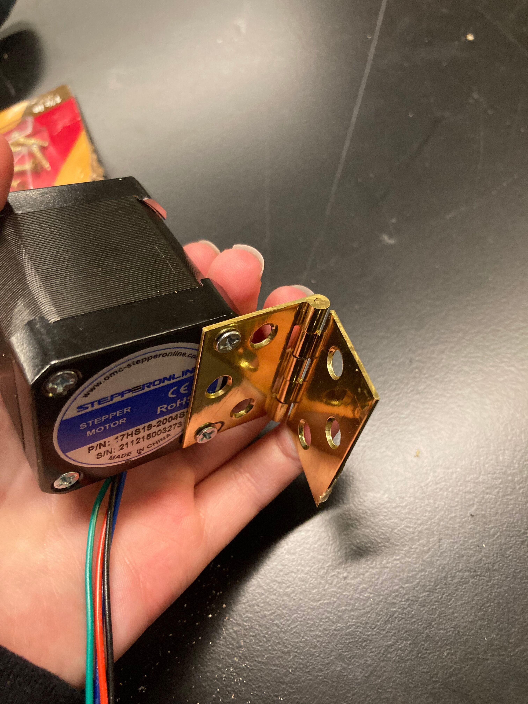
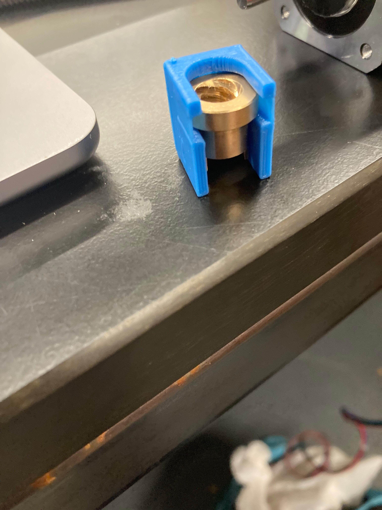
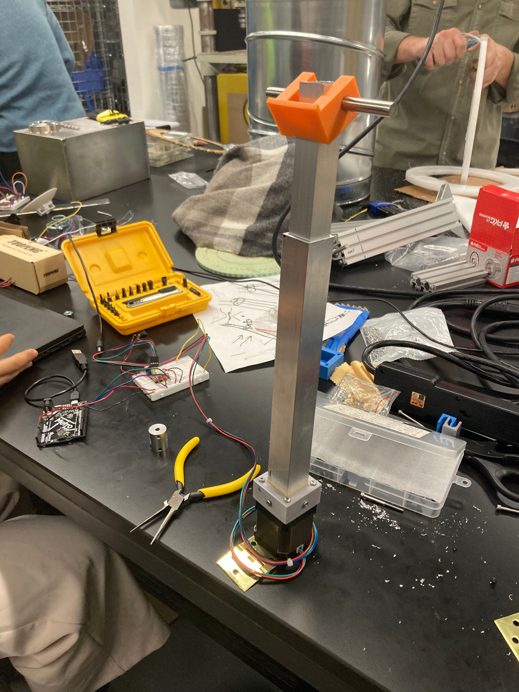
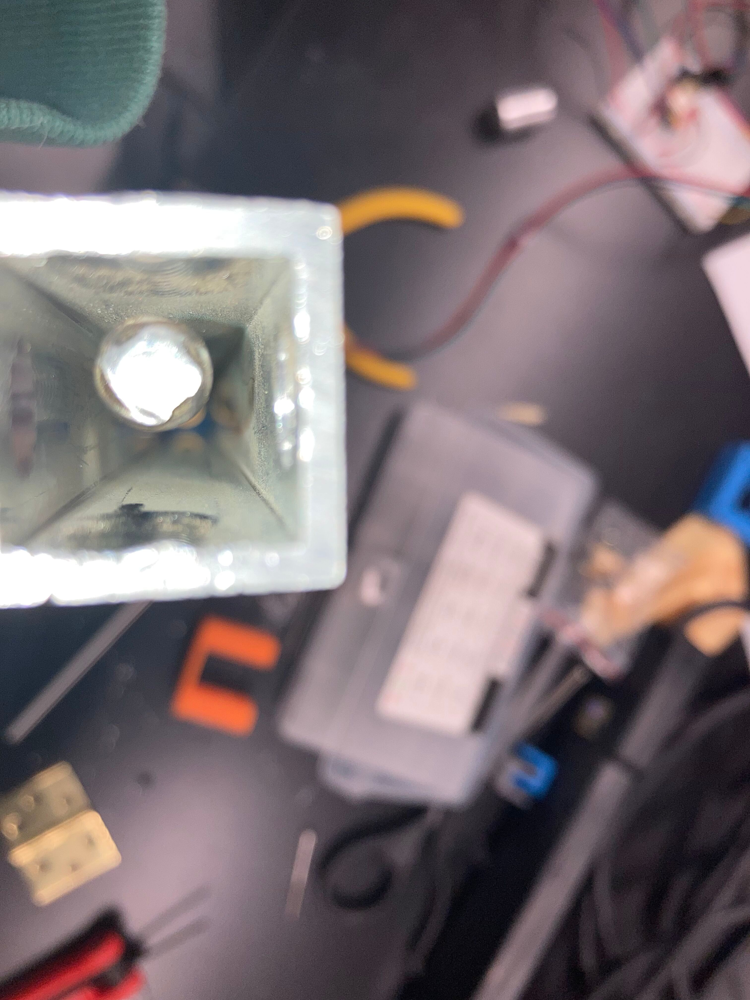
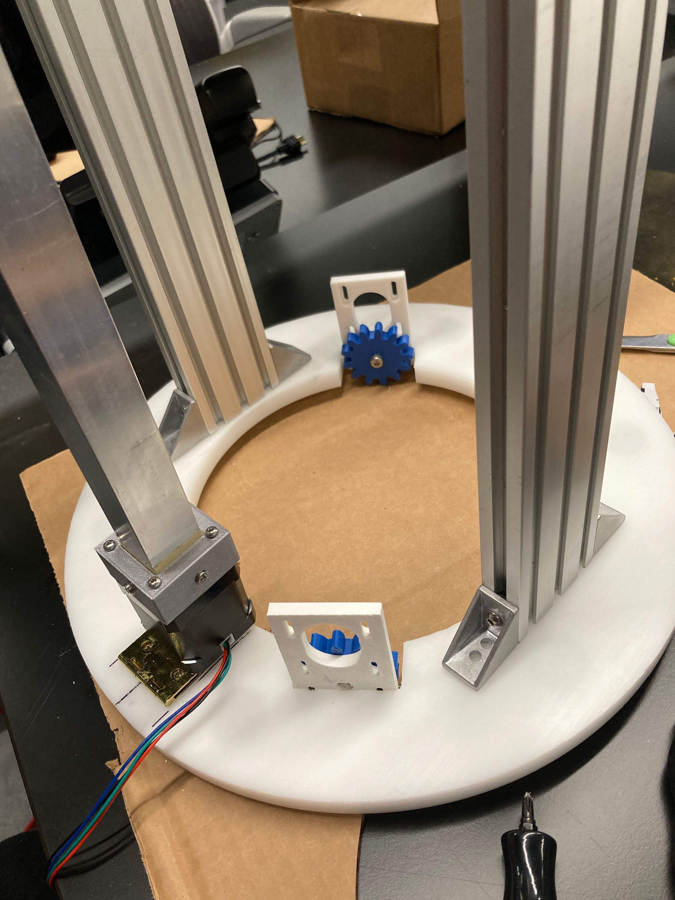

## Week 13:
### Monday:
We started assembling our prototype. I helped drill holes and countersink them into a
hinge in order to attach our motor to it. Catherine helped cut the parts of the
telescoping rods we had into the right length.

We also found that the lead screw fit inside our new lead screw holder, and the lead screw
holder fit inside the upper part of the telescoping rod.

### Wednesday:
Catherine and I helped drill more holes and screw together parts. We attached our lead
screw holder to the upper part of the telescoping rod. We also had to countersink the
holes so the heads of the screws would fit inside the lower part of the telescoping rod.
We also drilled holes and screwed the 3D printed part that sits on top of the motor to
the lower part of the telescoping rod. We also attached that 3D printed part in the
stepper motor. In addition, we also connected the threaded rod to the motor and to the
lead screw. By getting the motor to turn, we were able to lower the upper part of the
telescoping rod into the lower part. Our attitude adjuster was finished and just needed
to be connected to the rest of the prototype.


On Sunday, Catherine and I drilled holes and attached the hinge on the stepper motor to
the base on our prototype. We also helped attach a gear onto the prototype and attached
5/6 ball bearings onto the base with epoxy.
